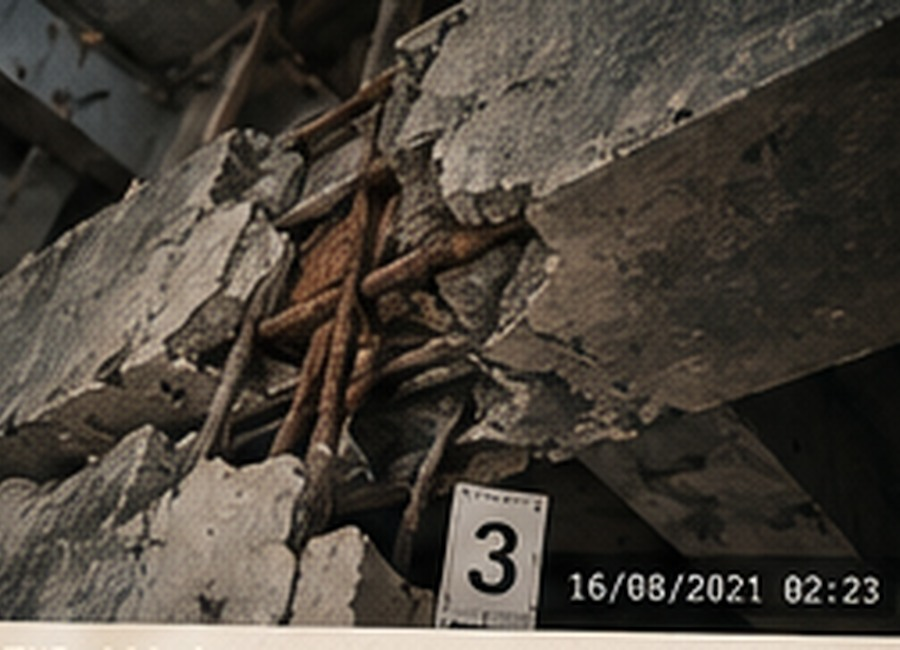

REOPENED INVESTIGATION · 2026
CASE 001 THE COLLAPSE
11 orang tewas. Laporan resmi menyebut kebocoran gas. Delapan tahun kemudian, arsip yang hilang ditemukan kembali.
INVESTIGATION PROGRESS
◇
VEYRA RESEARCH CENTERTECHNICAL INSPECTION DIVISION
CONFIDENTIALLAPORAN PEMERIKSAAN AWAL
1. RINGKASAN
Pada 18 September 2018 sekitar pukul 02.17 WIB, sebagian struktur gedung Veyra Research Center runtuh. Sebelas orang meninggal dunia.
2. TEMUAN AWALRetakan kolom C7 pernah dilaporkan. Sensor getaran aktif empat menit sebelum alarm gas.

FOTO ILUSTRASI AI • DOKUMEN KASUS FIKSI
Catatan Detektif
Catat fakta, dugaan, dan bukti yang belum terjawab. Catatan tersimpan otomatis pada perangkat ini.
Perubahan disimpan otomatis.
Timeline Kejadian
Evidence Board
Hubungkan temuan untuk membangun hipotesis. Ingat: urutan kejadian tidak otomatis membuktikan penyebabnya.
Final Verdict
Putusan akhir baru dapat diajukan setelah empat amplop dibuka dan bukti utama ditelaah.